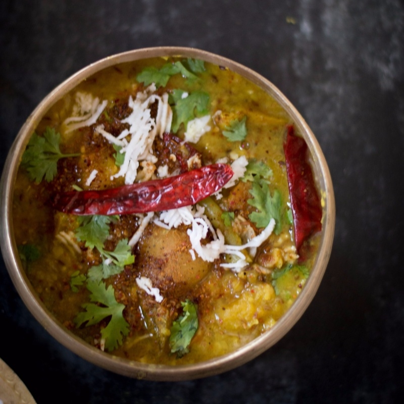

scroll-to-bottom
Dalma-The wholesome food of Odisha

Dalma is a Chickpea Dal Cooked With Vegetables and Raw Papaya,
a delicacy from the state of Odisha.
Dalma is essentially dal (lentil) cooked with an assortment of vegetables and spices.
Apart from being a part of the main course, people relish the dish with a variety
of dishes like Dalma with Pitha (local pancake), Dalma with Vada (fried lentil cake).
The high protein and healthy dish is the most essential component of any Odia meal.
Ingredients
- Papita (Raw Papaya) – 200gm,
Aloo (Potato) – 100 gm,
Baigana (Brinjal, Eggplant) – 75gm,
Sajana Chhuin (Drumstick) – 80 gm,
Saru (Arum, Arbi) – 120 gm,
Beans – 20 gm
- kakharu (Pumpkin) – 120 gm,
Piaja (Onion)- 100 gm,
Harad Dali (Pigeon Pea, Arhar Dal) -150 gm,
Sorisha (Mustard Seed)- 2tsp
- kancha kadali (Raw banana) – 65 gm,
Jeera (Cumin Seed)- 4 tsp
Haladi Gunda (Turmeric Powder) – 2tsp
Teja Patra (Bay Leaf) -2 pc
Sukhila Lanka (Dry Chili) – 3pc
Refine Tela (Refined Oil) – 3tbsp
Luna( Salt) – as per taste
Instructions
-
Wash the vegetables thoroughly; cut them into medium size pieces, cut beans and drumstick into 2 inch long pieces. Cut thin slices of onion.
Soak the dal in water for about 1 hr.
- Fry 3 tsp cumin seed and 2 pc dry chili slightly,
then make a fine powder out of it, keep aside.
- Boil 6, 7 cups of water in a deep pan. Add the dal, turmeric powder(1tsp) and cook it.
When half cooked add the vegetables to it. Add salt.
- When the vegetables are half cooked add the tomato pieces.
Cook it till everything is well cooked.
Remove from flame and keep aside.
- PHeat oil in a deep pan. When hot add the mustard seed, cumin seed, bay leaf and dry chili.
When splutter add the onion slices, fry it till turns golden brown.
- Add the boiled dal and vegetable mixture to it slowly. Cover it.
Finally, sprinkle the cumin chili powder (step-3) on it.
Remove from flame Serve hot with rice or roti.
Back to top
Next Page
Back Page
Home Page